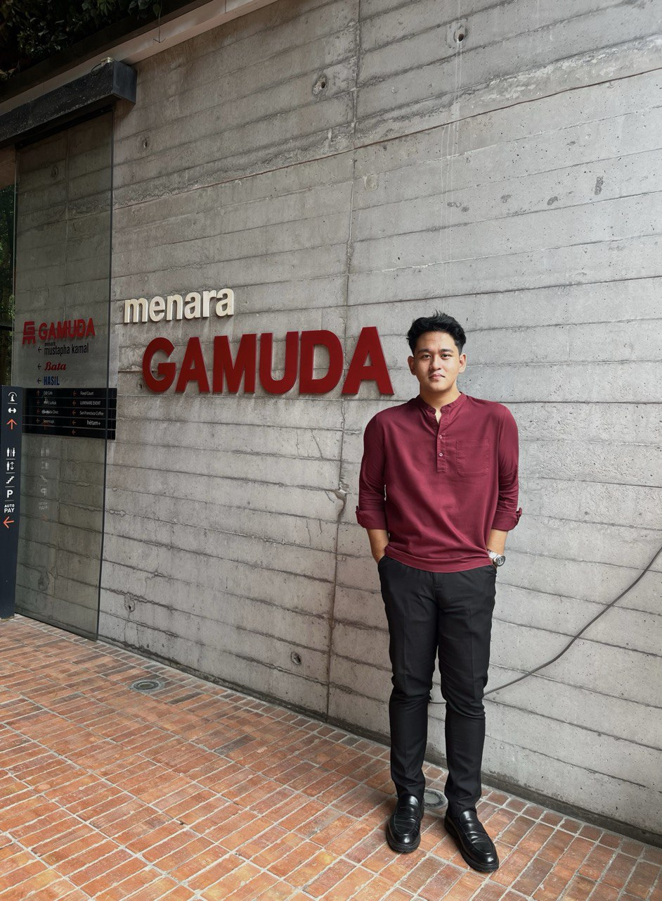

Hi, I'm Zakhwan Anuar
I'm a Computer Science student specializing in Cybersecurity at Universiti Tenaga Nasional. I'm passionate about understanding how systems work.
I've been actively competing in CTF competitions, building security tools, and studying offensive and defensive security techniques.
When I’m not working on tech, I’m usually into event planning or reading something interesting. There’s always something new to learn.
Focus Areas
Career Goals
I'm looking for opportunities in malware analysis, threat intelligence, incident response, cybersecurity analyst and security research — I'm especially interested in malware analysis and security research right now. Feel free to reach out.